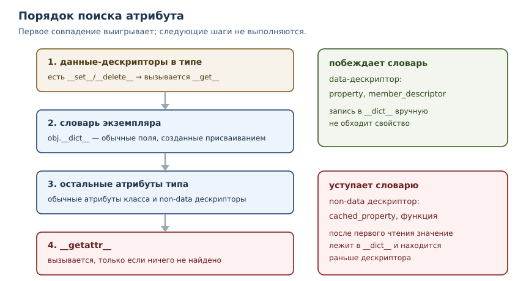
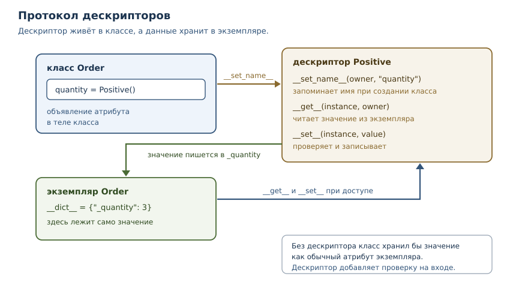

Метапрограммирование и дескрипторы
Как Python позволяет программам изменять собственное поведение — и когда это оправдано.
В этой главе
Вы уже видели, как Python управляет атрибутами: property превращает метод в
поле, декоратор оборачивает функцию, dataclass сам пишет __init__. Всё это
работает благодаря механизмам, которые находятся ниже обычного кода: поиску
атрибутов, дескрипторам и метаклассам. В этой главе мы разберём их устройство,
чтобы перестать воспринимать такие инструменты как магию — и чтобы понимать,
когда применять их самим, а когда это лишняя сложность.
43.1 Что вы сможете после этой главы
- объяснять порядок поиска атрибута и предсказывать, какое значение получится;
- писать собственные дескрипторы для проверки и вычисляемых полей;
- отличать
__getattr__от__getattribute__и безопасно применять оба; - создавать метаклассы и понимать, когда достаточно
__init_subclass__; - оценивать цену метапрограммирования и выбирать самый простой механизм, который решает задачу.
43.2 Что такое метапрограммирование
Метапрограммирование — приём, при котором программа работает не только с данными, но и со своей структурой: читает классы и функции, изменяет их, создаёт новые во время исполнения. В Python для этого есть несколько уровней, и их полезно различать по силе и цене.
| Уровень | Инструменты | Что меняет |
|---|---|---|
| интроспекция | getattr, vars, __dict__, inspect |
читает структуру, ничего не меняя |
| динамические атрибуты | __getattr__, __setattr__ |
меняет доступ к атрибутам объекта |
| дескрипторы | __get__, __set__, __set_name__ |
управляет одним атрибутом класса |
| декораторы классов | функция над классом | меняет класс после создания |
| метаклассы | type, metaclass= |
меняет сам процесс создания класса |
Чем ниже уровень в таблице, тем мощнее механизм и тем труднее читать код.
Правило простое: выбирайте верхний уровень, который решает задачу.
Интроспекция почти ничего не стоит, метакласс же делает поведение класса
неочевидным для читателя и для инструментов вроде mypy.
43.3 Интроспекция
Самый простой уровень метапрограммирования ничего не меняет: программа читает свою структуру и принимает решения по ней. Это нужно отладчикам, сериализации, документации и тестам.
import inspect
def area(width, height, unit="см"):
"""Площадь прямоугольника."""
return width * height
signature = inspect.signature(area)
print("параметры:", list(signature.parameters))
print("значение по умолчанию:", signature.parameters["unit"].default)
print("документация:", area.__doc__)
class Point:
def __init__(self, x, y):
self.x = x
self.y = y
point = Point(1, 2)
print("поля экземпляра:", sorted(vars(point)))
print("getattr по имени:", getattr(point, "x"))
параметры: ['width', 'height', 'unit']
значение по умолчанию: см
документация: Площадь прямоугольника.
поля экземпляра: ['x', 'y']
getattr по имени: 1
inspect.signature описывает параметры функции, vars показывает словарь
объекта, getattr читает атрибут по имени из строки. Всё это работает без
изменения кода и не создаёт скрытой логики: читатель видит обычные вызовы
функций. Именно поэтому интроспекция — предпочтительный способ, если задача
сводится к «узнать и решить».
43.4 Поиск атрибута
Прежде чем говорить о дескрипторах, нужно понять, что происходит при обращении
subject.value. Python не просто ищет ключ в словаре. Порядок такой.
- Данные-дескрипторы в типе. Просматривается
type(subject).__mro__(порядок разрешения методов из главы 27). Если в одном из классов найден дескриптор с методом__set__или__delete__, вызывается его__get__. - Словарь экземпляра. Если в
subject.__dict__есть ключ, возвращается его значение. - Остальные атрибуты типа. Если в типе найден обычный атрибут или
дескриптор без
__set__, он используется; для дескриптора вызывается__get__. __getattr__. Если ничего не найдено и у класса определён__getattr__, вызывается он.

Проверим ключевое различие: дескриптор с __set__ побеждает словарь
экземпляра, а дескриптор без __set__ — нет.
class DataDescriptor:
def __get__(self, instance, owner=None):
return "значение из data-дескриптора"
def __set__(self, instance, value):
print("__set__ вызван, значение отброшено")
class NonDataDescriptor:
def __get__(self, instance, owner=None):
return "значение из non-data дескриптора"
class Subject:
data = DataDescriptor()
nondata = NonDataDescriptor()
subject = Subject()
subject.__dict__["data"] = "значение в словаре экземпляра"
subject.__dict__["nondata"] = "значение в словаре экземпляра"
print("data:", subject.data)
print("nondata:", subject.nondata)
data: значение из data-дескриптора
nondata: значение в словаре экземпляра
Вот почему property (глава 26) всегда управляет доступом: у него есть
__set__, то есть он data-дескриптор. Прямая запись в __dict__ не обходит
свойство.
class Item:
def __init__(self):
self.__dict__["price"] = 999
@property
def price(self):
return 100
item = Item()
print("property победил:", item.price)
print("в словаре экземпляра:", item.__dict__["price"])
property победил: 100
в словаре экземпляра: 999
43.5 Дескрипторы
Дескриптор — объект, который управляет доступом к атрибуту другого объекта: он объявлен в классе и реализует методы протокола дескрипторов. Протокол дескрипторов — набор методов, которые Python вызывает при доступе к атрибуту:
| Метод | Когда вызывается | Обязателен |
|---|---|---|
__get__(self, instance, owner) |
при чтении атрибута | да, иначе это не дескриптор |
__set__(self, instance, value) |
при присваивании | нет |
__delete__(self, instance) |
при del |
нет |
__set_name__(self, owner, name) |
при создании класса | нет |
Дескриптор с __set__ или __delete__ называют data-дескриптором
(дескриптор данных), без них — non-data дескриптором. Это различие и
определяет место в порядке поиска.
Простейший полезный дескриптор — проверяющее поле. Он хранит значение в отдельном атрибуте экземпляра и не пропускает недопустимые значения.
class Positive:
def __set_name__(self, owner, name):
self.name = f"_{name}"
def __get__(self, instance, owner=None):
if instance is None:
return self
return getattr(instance, self.name)
def __set__(self, instance, value):
if value <= 0:
raise ValueError("значение должно быть положительным")
setattr(instance, self.name, value)
class Order:
quantity = Positive()
def __init__(self, quantity):
self.quantity = quantity
order = Order(3)
print("количество:", order.quantity)
print("поле в словаре:", order.__dict__)
try:
order.quantity = 0
except ValueError as error:
print("ValueError:", error)
количество: 3
поле в словаре: {'_quantity': 3}
ValueError: значение должно быть положительным
Разберём, что происходит. При создании класса Python вызывает
__set_name__ и передаёт дескриптору имя атрибута. __set__ проверяет
значение и кладёт его в _quantity. __get__ читает оттуда же. Когда
instance is None, обращение идёт через класс (Order.quantity), и
дескриптор возвращает сам себя — так работают и property, и методы.

Функция — тоже дескриптор. Поэтому Greeter.hello — функция, а
greeter.hello — связанный метод: __get__ функции возвращает метод,
который помнит экземпляр.
class Greeter:
def hello(self):
return "привет"
greeter = Greeter()
print("атрибут класса:", type(Greeter.hello).__name__)
print("атрибут экземпляра:", type(greeter.hello).__name__)
print("вызов:", greeter.hello())
атрибут класса: function
атрибут экземпляра: method
вызов: привет
Углубление: порядок записи
Присваивание устроено зеркально чтению, но с одной оговоркой: сначала всегда
вызывается __setattr__ объекта, а уже внутри него — __set__ подходящего
дескриптора. Поэтому переопределённый __setattr__ видит все записи, включая
те, которые затем обработает дескриптор.
class Checked:
def __set__(self, instance, value):
print("__set__ дескриптора")
instance.__dict__["checked"] = value
class Thing:
checked = Checked()
def __setattr__(self, name, value):
print("__setattr__:", name)
super().__setattr__(name, value)
thing = Thing()
thing.checked = 5
print("значение:", thing.__dict__["checked"])
__setattr__: checked
__set__ дескриптора
значение: 5
Отсюда практическое правило: для проверки значений используйте дескриптор или
property, а __setattr__ оставьте для задач, где нужно видеть все записи
сразу, — например, для аудита изменений. Переопределять __setattr__ ради
валидации одного поля не стоит: он замедляет все присваивания и легко
превращается в источник рекурсии.
Углубление: дескрипторы в стандартной библиотеке
Многие привычные инструменты — дескрипторы. functools.cached_property —
non-data дескриптор: при первом чтении он вычисляет значение и кладёт его в
словарь экземпляра. Дальше обычный поиск находит значение в __dict__ раньше
дескриптора, и вычисление не повторяется.
from functools import cached_property
class Box:
def __init__(self, width, height):
self.width = width
self.height = height
@cached_property
def area(self):
print("вычисляем площадь")
return self.width * self.height
box = Box(3, 4)
print("первое чтение:", box.area)
print("второе чтение:", box.area)
print("тип атрибута класса:", type(Box.area).__name__)
вычисляем площадь
первое чтение: 12
второе чтение: 12
тип атрибута класса: cached_property
Ещё пример — __slots__. Для каждого имени в __slots__ класс получает
дескриптор-хранилище: он умеет читать и писать значение в заранее выделенном
месте, а словаря экземпляра при этом нет. Поэтому лишние атрибуты не
принимаются, а память экономится.
class Slotted:
__slots__ = ("value",)
print("тип слота в классе:", type(Slotted.value).__name__)
slotted = Slotted()
slotted.value = 1
print("значение:", slotted.value)
try:
slotted.extra = 2
except AttributeError:
print("лишний атрибут отклонён:", True)
тип слота в классе: member_descriptor
значение: 1
лишний атрибут отклонён: True
Дескрипторы оправданы, когда одно и то же поведение нужно многим атрибутам
многих классов: проверка диапазона, ленивое вычисление, кэширование,
преобразование единиц. Для одного поля достаточно property.
43.6 Динамические атрибуты
Динамический атрибут — атрибут, который не хранится в объекте, а вычисляется или подставляется в момент обращения. Для этого есть два метода, и путать их опасно.
__getattr__(self, name)вызывается, только когда обычный поиск не нашёл атрибут. Это безопасная точка расширения.__getattribute__(self, name)вызывается при любом обращении и заменяет весь механизм поиска. Ошибка в нём ломает объект целиком, включая доступ к собственным полям.
Типичное применение __getattr__ — настройки с доступом через точку.
class Settings:
def __init__(self, values):
self._values = values
def __getattr__(self, name):
if name.startswith("_"):
raise AttributeError(name)
try:
return self._values[name]
except KeyError:
raise AttributeError(f"нет настройки {name!r}") from None
settings = Settings({"timeout": 30})
print("timeout:", settings.timeout)
print("значение по умолчанию:", getattr(settings, "retries", 3))
try:
settings.unknown
except AttributeError as error:
print("AttributeError:", error)
timeout: 30
значение по умолчанию: 3
AttributeError: нет настройки 'unknown'
Три правила безопасного __getattr__. Первое: всегда поднимайте
AttributeError для неизвестного имени, иначе сломаются hasattr,
getattr с умолчанием и проверки в библиотеках. Второе: не обращайтесь
внутри к атрибутам, которых может не быть, — иначе получите бесконечную
рекурсию. Третье: не подменяйте опечатки — settings.timout должен падать,
а не возвращать None.
Углубление: когда __getattr__ вредит
Если __getattr__ возвращает значение для любого имени, объект перестаёт
сообщать об ошибках: опечатка в имени метода превращается в вызов «чего-то».
Отладка становится дорогой, а статическая проверка типов вообще не видит таких
атрибутов. Поэтому динамические атрибуты применяют для узкого и понятного
набора имён, а не как универсальный заменитель полей.
43.7 Метаклассы
Метакласс — класс, экземплярами которого являются классы. У обычного
класса метакласс — type: type(Order) возвращает type. Если нужно
вмешаться в создание класса, объявляют свой метакласс и указывают его в
metaclass=.
Типичная задача — реестр подклассов: классы регистрируются автоматически, и никто не забывает добавить запись вручную.
class Registry(type):
def __new__(mcs, name, bases, namespace):
cls = super().__new__(mcs, name, bases, namespace)
if name != "Plugin":
Registry.plugins[name] = cls
return cls
plugins = {}
class Plugin(metaclass=Registry):
pass
class JsonPlugin(Plugin):
pass
class CsvPlugin(Plugin):
pass
print("метакласс Plugin:", type(Plugin).__name__)
print("зарегистрированы:", sorted(Registry.plugins))
метакласс Plugin: Registry
зарегистрированы: ['CsvPlugin', 'JsonPlugin']
__new__ метакласса получает имя, базовые классы и пространство имён и
возвращает готовый класс. Здесь же можно добавить методы, проверить
инварианты, переименовать атрибуты.
Однако для регистрации подклассов метакласс не обязателен: то же самое делает
__init_subclass__, и он проще.
class Plugin:
registry = {}
def __init_subclass__(cls, **kwargs):
super().__init_subclass__(**kwargs)
Plugin.registry[cls.__name__] = cls
class JsonPlugin(Plugin):
pass
class CsvPlugin(Plugin):
pass
print("зарегистрированы:", sorted(Plugin.registry))
зарегистрированы: ['CsvPlugin', 'JsonPlugin']
Правило выбора: если задача решается через __init_subclass__, декоратор
класса или property, метакласс не нужен. Метаклассы оправданы в библиотеках
и фреймворках, где поведение задаётся для целого семейства классов, а
пользователь не должен ничего писать вручную. Ещё одна причина избегать
метаклассов — конфликты: у класса может быть только один метакласс, и
наследование от двух классов с разными метаклассами приводит к TypeError.
Углубление: классы, созданные во время исполнения
Метакласс — не единственный способ создать класс в runtime. type с тремя
аргументами создаёт класс из имени, базовых классов и словаря атрибутов.
Этим пользуются фабрики моделей, ORM и генераторы кода.
def make_model(name, fields):
namespace = {"__annotations__": {field: str for field in fields}}
for field in fields:
namespace[field] = None
return type(name, (), namespace)
Record = make_model("Record", ["title", "author"])
record = Record()
record.title = "Python"
print("имя класса:", Record.__name__)
print("поля:", sorted(Record.__annotations__))
print("значение:", record.title)
print("экземпляр своего класса:", isinstance(record, Record))
имя класса: Record
поля: ['author', 'title']
значение: Python
экземпляр своего класса: True
Такой класс ничем не отличается от объявленного через class: class Record: ...
компилируется в те же шаги — собрать пространство имён и вызвать метакласс.
Разница в читаемости: объявление в коде видно сразу, а создание в runtime
нужно проследить. Поэтому динамические классы применяют там, где набор полей
известен только при запуске, — например, по описанию из конфигурации.
43.8 Декораторы классов
Декоратор класса — функция, которая получает класс и возвращает класс (или другой объект). Это тот же приём, что и декораторы функций из главы 22, но применённый к классу.
def add_repr(cls):
def __repr__(self):
fields = ", ".join(f"{name}={value!r}" for name, value in vars(self).items())
return f"{type(self).__name__}({fields})"
cls.__repr__ = __repr__
return cls
@add_repr
class Point:
def __init__(self, x, y):
self.x = x
self.y = y
print(Point(1, 2))
Point(x=1, y=2)
Декоратор класса — компромисс между явным кодом и метаклассом: он виден в объявлении класса, применяется к одному классу и не влияет на наследников автоматически. Для большинства задач этого достаточно. Недостаток тот же, что у любого метапрограммирования: читатель должен знать, что декоратор делает, поэтому имя должно быть говорящим, а поведение — документированным.
43.9 Когда это оправдано
Метапрограммирование стоит применять, когда выполняются все три условия.
- Повторение реально. Один и тот же код нужен многим классам или атрибутам, и копирование уже стало источником ошибок.
- Поведение декларативно. Пользователь механизма описывает что, а не
как:
quantity = Positive()читается лучше, чем ручная проверка в__init__каждого класса. - Цена чтения оправдана. Механизм документирован, протестирован и не скрывает ошибки: опечатки падают, типы проверяются, отладка возможна.
Проверочный список перед тем, как писать дескриптор или метакласс:
- сколько мест придётся изменить без механизма — одно, три или тридцать;
- сможет ли новый читатель понять класс, не открывая реализацию механизма;
- видит ли
mypyатрибуты, которые создаёт механизм; - что произойдёт с ошибкой: упадёт она с понятным сообщением или превратится
в тихое значение
None; - есть ли более простой инструмент —
property,dataclass, декоратор.
Если хотя бы одно условие не выполняется, лучше явный код. Явный код длиннее,
но его понимает каждый, кто открыл файл, и его видит mypy. Метапрограммирование
пишут один раз, а читают много раз.
43.10 Как тестировать метапрограммирование
Механизм, который меняет поведение классов, нужно проверять отдельно от бизнес-логики. Минимальный набор тестов выглядит так.
- Успешный сценарий. Атрибут читается и пишется, значение сохраняется.
- Отказ. Недопустимое значение поднимает ожидаемое исключение, а не проходит молча.
- Наследование. Подкласс ведёт себя так же;
__set_name__получает правильные имена. - Границы.
None, пустые значения,boolвместоint— всё, что легко перепутать. - Читаемость. Тот, кто открывает класс, должен видеть объявление поля и понимать, откуда берётся поведение. Если для этого нужно читать метакласс, механизм, вероятно, слишком сложен.
Тесты на дескриптор пишут как на обычный компонент: создают класс-носитель и проверяют доступ к атрибуту. Это ещё один довод в пользу дескрипторов и декораторов классов: их можно тестировать изолированно, а метакласс затрагивает всю иерархию.
43.11 Типичные ошибки
__getattr__не поднимаетAttributeError. Ломаютсяhasattr,getattrс умолчанием и проверки библиотек; опечатки перестают быть ошибками.- Бесконечная рекурсия в
__getattr__. Внутри метода нельзя обращаться к отсутствующим атрибутам: используйтеobject.__getattribute__или поля, которые точно есть. - Переопределение
__getattribute__без необходимости. Это самый рискованный метод: он вызывается для всех обращений, включая служебные. - Дескриптор без
__set__и ожидание, что он победит словарь экземпляра. Non-data дескриптор уступает значению в__dict__; для контроля нужен data-дескриптор. - Метакласс там, где хватает
__init_subclass__. Лишний уровень магии усложняет чтение и ломает композицию с другими метаклассами. - Один метакласс на иерархию «на всякий случай». Конфликт метаклассов проявляется при наследовании и лечится только переписыванием иерархии.
execиevalвместо механизмов языка. Динамический код трудно проверять, отлаживать и защищать; почти всегда есть явная альтернатива.
43.12 Упражнения
1. Порядок поиска
Дан класс с property для price и запись instance.__dict__["price"] = 999.
Что вернёт instance.price и почему? А если заменить property на объект с
одним методом __get__? Объясните через порядок поиска атрибута.
2. Проверяющий дескриптор
Напишите дескриптор Bounded(min_value, max_value), который проверяет
диапазон при записи и хранит значение в закрытом атрибуте экземпляра.
Используйте его в классе Sensor для поля temperature с диапазоном от −50
до 150. Проверьте допустимое и недопустимое значения.
3. __set_name__
Дескриптор Field должен сохранять имя атрибута, чтобы найти место хранения.
Реализуйте его и объясните, когда именно вызывается __set_name__ и что
произойдёт, если назначить дескриптор после создания класса.
4. __getattr__ или __getattribute__
Класс конфигурации должен подставлять значения по умолчанию для отсутствующих ключей. Какой из двух методов выбрать и почему? Покажите, что выбранный вариант не мешает доступу к обычным полям.
5. Опечатка в динамическом атрибуте
Объект с __getattr__ возвращает None для любого имени. Приведите два
примера, как это скрывает ошибку, и перепишите __getattr__ так, чтобы
опечатки падали с AttributeError.
6. Реестр подклассов
Реализуйте реестр плагинов двумя способами: через __init_subclass__ и через
метакласс. Сравните объём кода и читаемость. В каком случае метакласс даёт
что-то, чего не даёт __init_subclass__?
7. Декоратор класса
Напишите декоратор with_slots, который добавляет классу атрибут __slots__
по списку полей, переданному в декоратор с аргументами. Проверьте, что
экземпляр не принимает лишних атрибутов.
8. Метод как дескриптор
Объясните, почему Greeter.hello — функция, а greeter.hello — метод.
Что делает __get__ функции и как связанный метод получает экземпляр?
Подтвердите выводом типов.
9. Кэширующий дескриптор
Напишите non-data дескриптор Lazy, который при первом чтении вычисляет
значение функцией и запоминает его в словаре экземпляра. Почему здесь нужен
именно non-data дескриптор и что произойдёт, если добавить __set__?
10. Мини-задача: поля с валидацией
Реализуйте дескриптор Validated(checker), который принимает функцию-проверку
и поднимает ValueError при её провале. Соберите класс User с полями
name (непустая строка) и age (целое от 0 до 130). Проверьте, что оба поля
валидируются, а сообщение содержит имя поля.
43.13 Проверка понимания
- Перечислите шаги поиска атрибута при обращении
obj.name. - Чем data-дескриптор отличается от non-data и почему это различие важно?
- Зачем дескриптору метод
__set_name__? - Почему
propertyпобеждает значение в__dict__экземпляра? - Чем
__getattr__отличается от__getattribute__и какой из них безопаснее? - Что такое метакласс и почему
type(Order)— этоtype? - Когда
__init_subclass__предпочтительнее метакласса? - Почему метапрограммирование ухудшает читаемость и как это компенсировать?
43.14 Связи
Глава опирается на модель данных из главы 28: dunder-методы и то, как Python
вызывает их при обращении к объекту. Наследование и порядок разрешения методов
из главы 27 объясняют, в каком порядке просматривается тип. property из
главы 26 — частный случай дескриптора, а декораторы функций из главы 22 —
предшественники декораторов классов. Понимание объектов из главы 42 объясняет,
почему атрибуты ищутся в двух местах: в экземпляре и в типе.
Дальше — архитектура, SOLID и паттерны: метапрограммирование полезно для инфраструктуры, а архитектура помогает решить, где эта инфраструктура уместна.